How to Throw a Glow Party
Part 1: Stocking up on Supplies
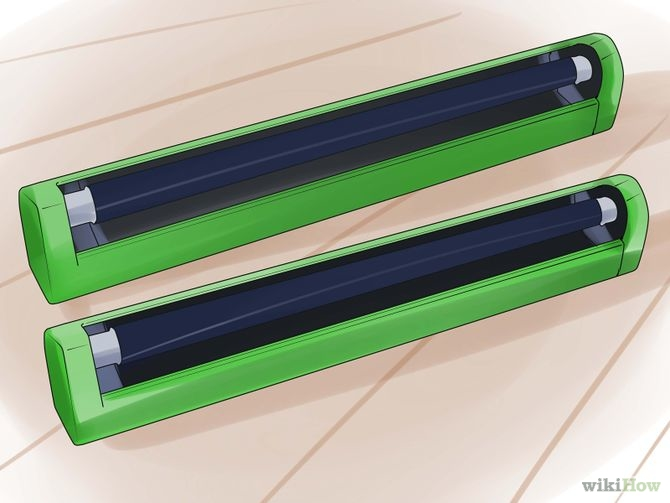
- Get black lights. If there's one thing that comes to mind when someone hears the words "glow party", it's usually this! Black lights give a fluorescent glow to brightly-colored objects and clothing, turning your party's dance floor into a whirlwind of color. While black lights aren't required for a great glow party (you can always just use standard glow-in-the-dark decorations and accessories), they can take an ordinary glow party to the next level, so consider buying or borrowing some.
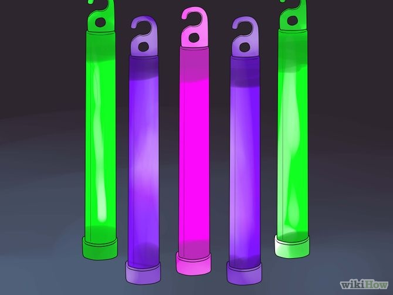
- Get glow sticks. Another glow party staple is the glow stick. This accessory which can come as a plastic "tube" or as a flexible, wearable band, contains a mild chemical reaction which, when activated, provides hours of glow time. Try wearing normal glow sticks around your neck as pendants or wearing skinny, flexible glow sticks around your wrists as bracelets.
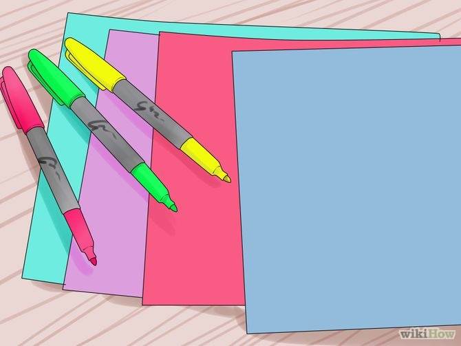
- Get fluorescent pens and paper. To give your party a DIY feel, try making your own decorations from brightly-colored paper and pens. Construction paper that's specifically labeled as fluorescent will usually glow under a black light, while most standard "neon"-style highlighters and markers will glow as well.
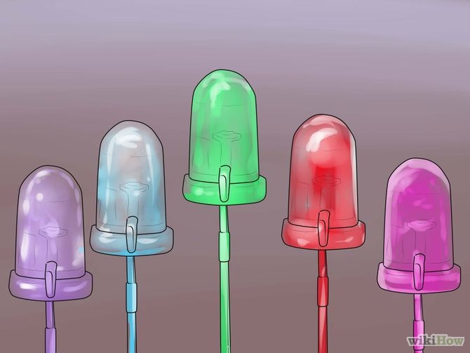
- Get glowing lights/LEDs. Another great addition to your glow party are ordinary glowing light decorations. These usually come in the form of standard bulbs or LEDs. Today, LEDs are fairly cheap and can often be programmed to flash different colors or cycle smoothly through a range of color, making them a great choice for your party if you're buying new. However, this is also a great chance to use old Christmas or holiday decorations that have sat unused in your garage for months, so don't feel the need to buy fancy new LEDs if you have other glowing decorations handy.
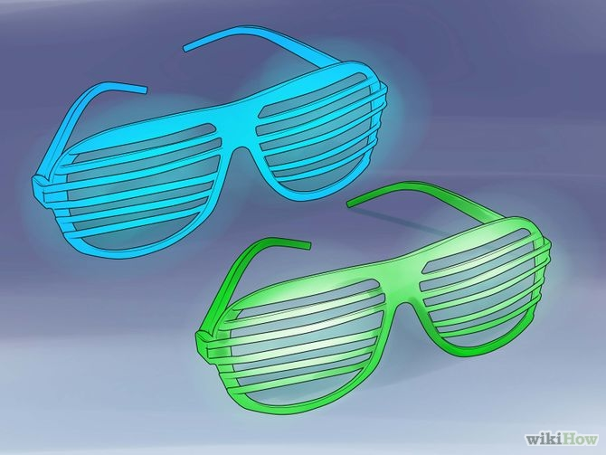
- Get cheap, brightly-colored accessories. If you're able to find them for a good price, brightly-colored plastic sunglasses, bracelets, rings, or other accessories make great party favors at a glow party. Cheapness is key here, however — you don't want to break the bank on supplies that may be dropped, lost, stepped on in the dark, so if you're going for this option, be sure to look for cheap plastic varieties.
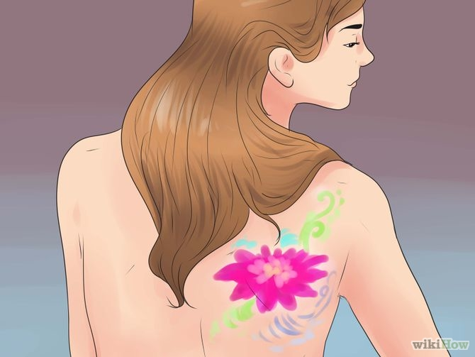
- Get body paint. If you're looking to get really wild, you may want to consider painting yourself with glow paint or even offering it to your guests. Glow-in-the-dark body paint is often available from specialty stores like costume shops, Halloween supply stores, and online. It can be trickier to get your hands on than your average glow party gear, but, used correctly, it gives unbelievable results.
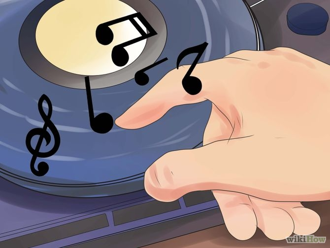
- Get some great tunes. Parties and music are like bread and butter — they go great together. If you're looking to recreate the look and feel of a "rave" at your glow party, you may want to go with classic house/techno or modern EDM (electronic dance music). However, it's possible to throw a great glow party with almost any sort of playlist, so as long as you've got great music (and a way to play it a reasonably high volume), you're set!
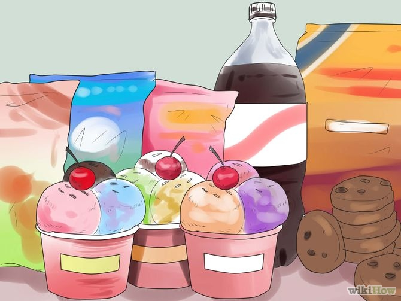
- Don't forget food and refreshments. Any party needs something to eat and drink — guests who are dancing, talking, and having a good time will eventually work up an appetite and a thirst, so having a selection of food and drink available is always a good idea. For glow parties, you may want to stick to finger food, as it can be tricky to mess with a plate and silverware in the dark.
Part 2: Preparing for Your Party
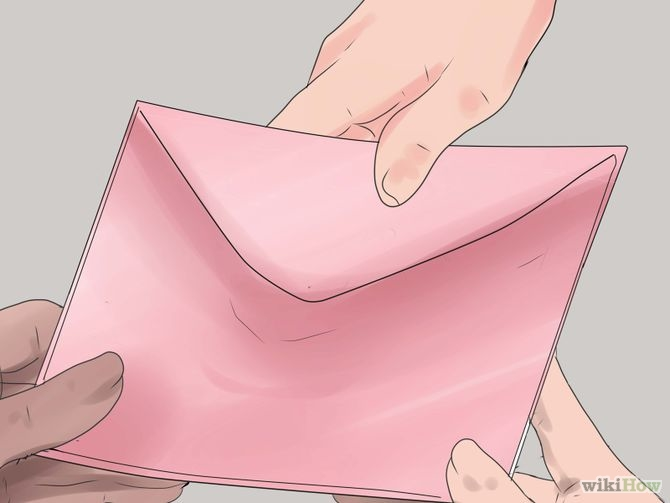
- Send out invitations well in advance. After you decide to have a glow party, you'll want to invite your guests fairly soon — the earlier you invite people, the more likely they'll be not to have a schedule conflict, so getting a jump on your invitations is a great idea. If you're having an intimate get-together, you may want to send individual invitations to your guests in the mail, but if you're throwing a big party, making an event on social media and inviting your friends that way is usually the quickest, easiest option.
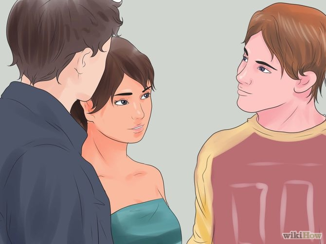
- Recruit willing friends to help you set up. Depending on how extensive your decoration plans for your glow party are, you may want to start setting up anywhere from a week beforehand up to a few hours before your party. Regardless of how big your party is, it can be a smart idea to get a friend or two to help you set up. Having other people handy shortens your total set-up time and gives you the advantage of having multiple perspectives when it comes to making decorating decisions. For example, your friend may think of a really ingenious way to set up your LED lights, like stringing them overhead as a mock "ceiling".
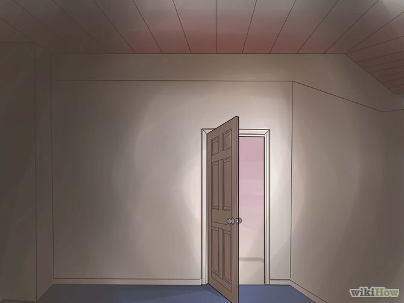
- "Black out" your party area. For a glow party, it's important to make sure that a minimum of light is able to make it into the main party area where you have most of your glowing decorations set up. In other words, the party area with most of the glowing decorations should be as close to pitch-black as possible. If this area is in the basement or attic, you may have very little work to do. However, if there are windows, you'll want to cover them to prevent any outside light from getting in.
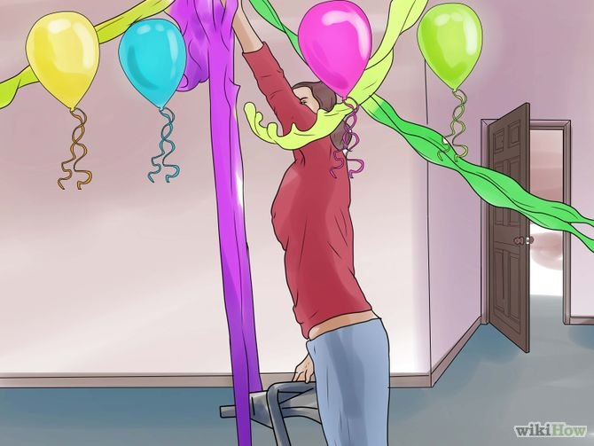
- Set up your decorations. Next, set up your glowing decorations. The exact way that you set up your decorations is up to you, but, generally, you'll want to set up your black lights in the "blacked out" party area so that people in this area will light up with a fluorescent glow. You may also want to decorate the outside of your building with lights to welcome your guests inside and put up glowing decorations in other parts of your house as well.
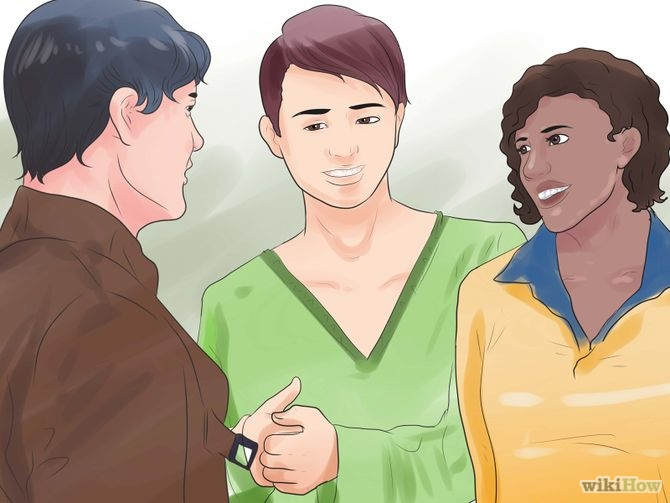
- Get permission if you plan to throw a real rager. For parties with a few friends, you usually don't have to worry about getting in serious trouble — even if you're too loud for your neighbors, most people will feel comfortable coming over and asking you to keep things down if your party is small and well-behaved. On the other hand, if you're throwing an enormous block party and you haven't gotten permission from your neighbors, there's a reasonable possibility that the police may show up. To avoid this, be sure to talk to all of your neighbors beforehand. Let them know the date and time of the party, give them your number so they can contact you if things get too loud, and let them voice any concerns they have.
Part 3: Throwing Your Party
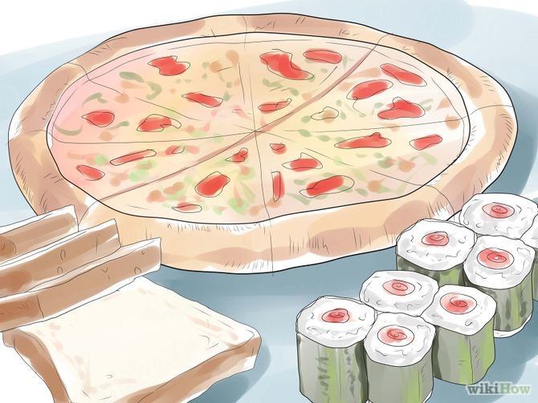
- Prepare any food or refreshments before your guests arrive. Try to have your food and drinks ready by the time your first guests arrive (no later than the stated time that the party will start, which is generally when the earliest guests may show up). Having your food and drink ready to serve ahead of time means that you'll have something to offer when the very first guests show up (which can be an awkward time, since it's just you and them). It also means that you won't have to rush to finish any last-minute food or drink preparations once guests begin to arrive in earnest, which frees you up to welcome people, start conversations, and be a great host!
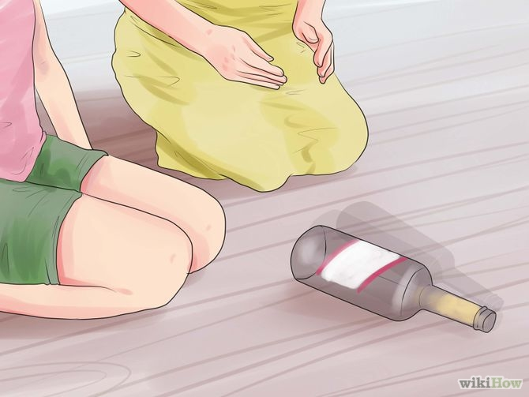
- Lead the guests in glow-in-the-dark games. Once your guests start to arrive, they'll usually start to talk to each other naturally and you won't have to supervise them to make sure that everyone has a good time. However, if things seem awkward or the party is getting a little "slow", it can be a great idea to start some glow party games to help get things rolling. For instance, basic kid's games like tag, hide-and-seek, and charades can take strange new terms in glowing, blacked-out garages. You may also want to try a few racy ice breakers like truth or dare, spin the bottle, or "Never Have I Ever" — it's all up to you.
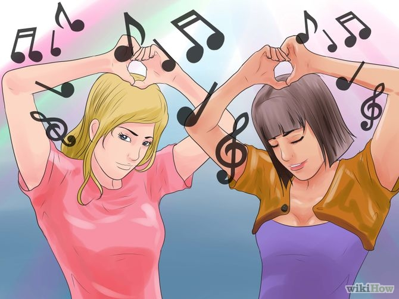
- Keep your party playlist spinning. Once enough guests have arrived that most of the guests are talking to each other without your help, you'll probably want to start your music. The volume you'll want to play it at will vary depending on the sort of party you're throwing. For instance, if your glow party is more of a casual get-together than a serious dance party, you may want to keep it somewhat subdued so that it can serve as background music. On the other hand, if you're trying to get people out on the dance floor, crank it!
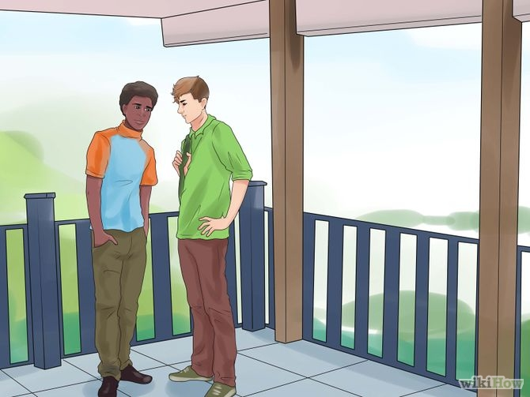
- Let your guests get fresh air if they need it. If your party is packed with guests (and especially if there's dancing), you'll want to make sure that your guests know how and where to get some fresh air. The cramped, sweaty confines of a crowded house party are the last place someone wants to be after an hour of dancing, so make sure your guests have access to a porch, patio, or other outside area to gather and cool off as needed.
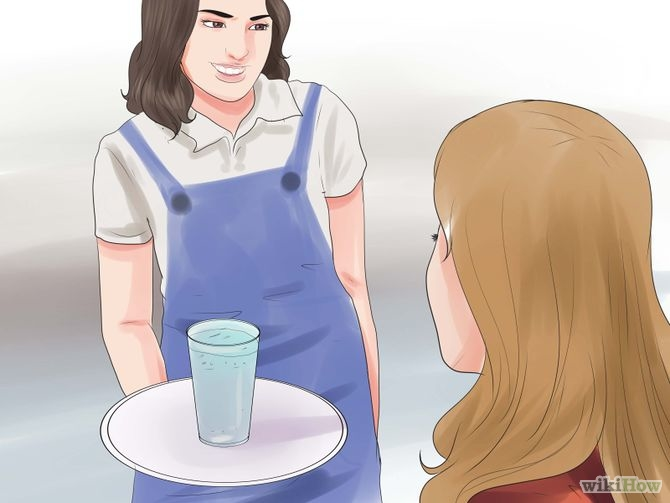
- Know the signs of exhaustion. For big, active parties with lots of dancing, hydration is a must. Make sure that your guests have easy access to clean, clear water in addition to whatever other refreshments you're offering and encourage them to drink after they've been dancing for a while. Dehydration can cause people to overheat and faint, which, at a crowded party, can seriously endanger them (not to mention put a damper on the festivities).
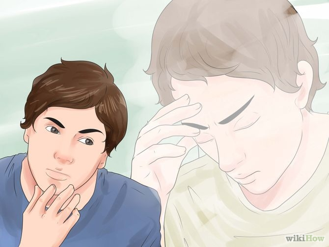
Back to Top